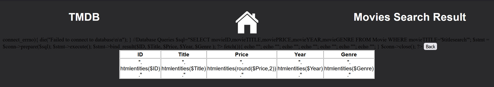
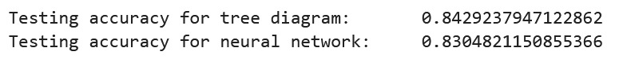
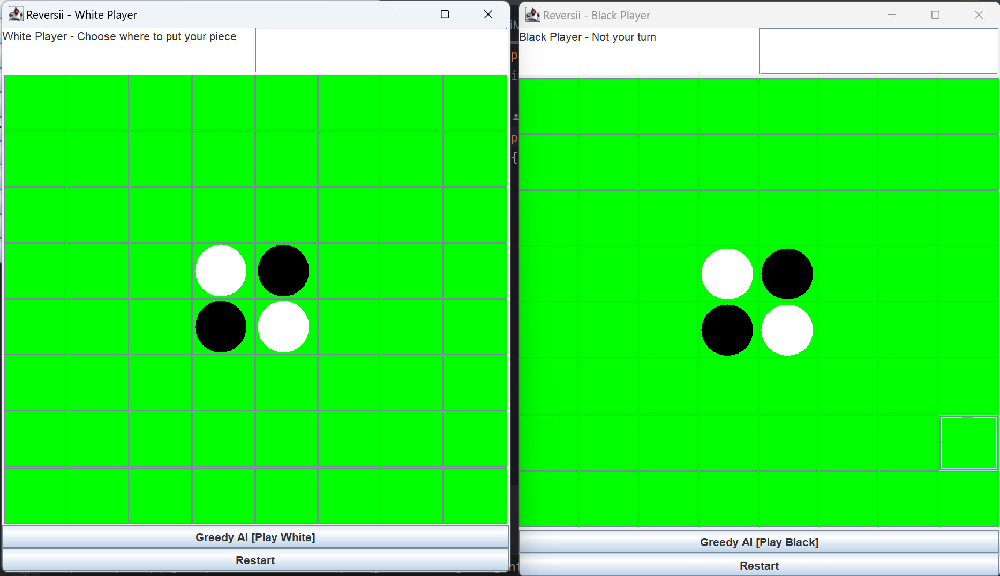

Not all my projects will be featured on this page, purely because they are either not worth showing or that I simply cannot find a viable way in order to show them.
During my database module, we had to create a site using html, css, javascript and php in which would access a database located on the university server where it would be able to fetch, add or delete information from that database. As you can see though my screenshot does have an error, as this cannot access the server at the current time (the server no longer holds the information).
During my artificial intelligence module, I had to create an A.I that would look at a spreadsheet and calculate the correct steps in order to predict that someone has or does not have heart disease
During my programming paradigms module, we had to create a playable game of reversi for our last java project. It is a simple game but a challenging program to make at the time as I had never done GUI at all during my programming career.
